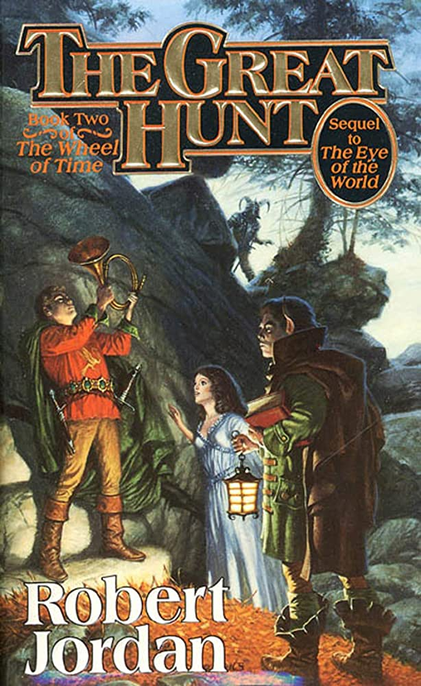
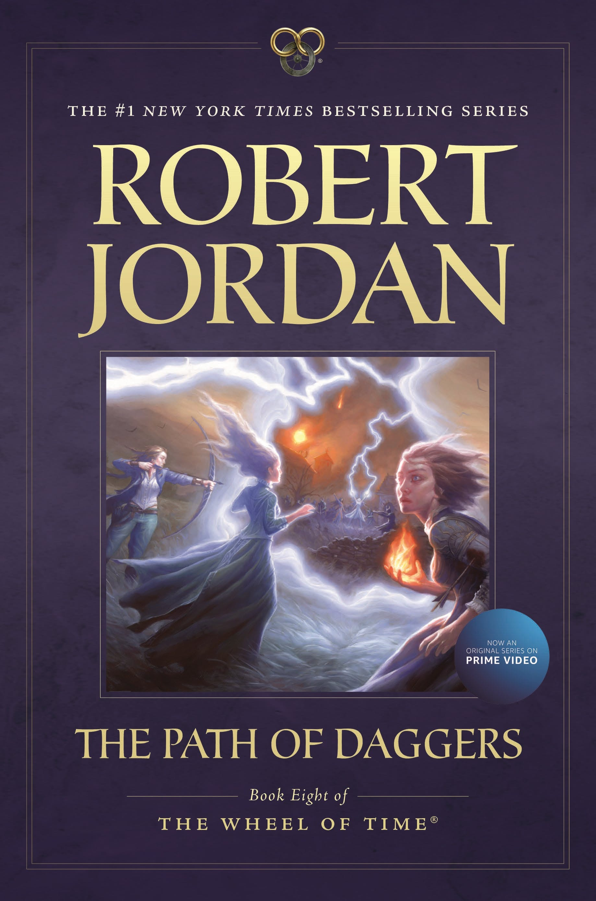
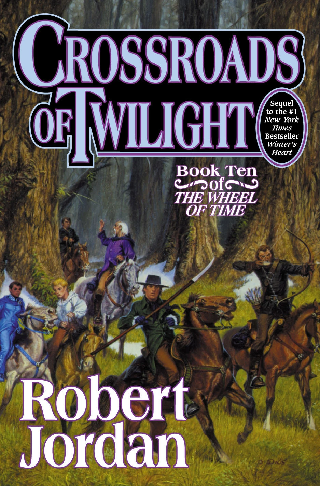
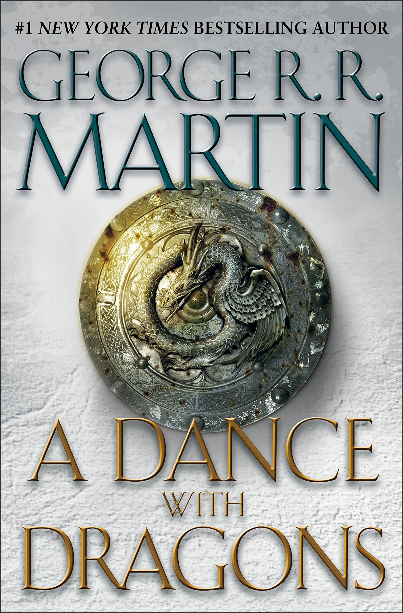

Books I have read
The Wheel of Time
The Wheel of Time series by Robert Jordan includes 14 books.
The Eye of the World (1990)

Title: The Eye of the World
Author: Robert Jordan
The Great Hunt (1990)

Title: The Great Hunt
Author: Robert Jordan
The Dragon Reborn (1991)

Title: The Dragon Reborn
Author: Robert Jordan
The Shadow Rising (1992)

Title: The Shadow Rising
Author: Robert Jordan
The Fires of Heaven (1993)

Title: The Fires of Heaven
Author: Robert Jordan
Lord of Chaos (1994)

Title: Lord of Chaos
Author: Robert Jordan
A Crown of Swords (1996)

Title: A Crown of Swords
Author: Robert Jordan
The Path of Daggers (1998)

Title: The Path of Daggers
Author: Robert Jordan
Winter's Heart (2000)

Title: Winter's Heart
Author: Robert Jordan
Crossroads of Twilight (2003)

Title: Crossroads of Twilight
Author: Robert Jordan
Knife of Dreams (2005)
Title: Knife of Dreams
Author: Robert Jordan
The Gathering Storm (2009)

Title: The Gathering Storm
Author: Robert Jordan and Brandon Sanderson
Towers of Midnight (2010)

Title: Towers of Midnight
Author: Robert Jordan and Brandon Sanderson
A Memory of Light (2013)

Title: A Memory of Light
Author: Robert Jordan and Brandon Sanderson
Pride and Prejudice (1813)

Title: Pride and Prejudice
Author: Jane Austen
A Song of Ice and Fire
A Song of Ice and Fire series by George R. R. Martin includes five books.
A Game of Thrones (1996)
Title: A Game of Thrones
Author: George R. R. Martin
A Clash of Kings (1998)

Title: A Clash of Kings
Author: George R. R. Martin
A Storm of Swords (2000)

Title: A Storm of Swords
Author: George R. R. Martin
A Feast for Crows (2005)

Title: A Feast for Crows
Author: George R. R. Martin
A Dance with Dragons (2011)

Title: A Dance with Dragons
Author: George R. R. Martin
The Kingkiller Chronicle
The Kingkiller Chronicle series by Patrick Rothfuss includes two books.
The Name of the Wind (2007)

Title: The Name of the Wind
Author: Patrick Rothfuss
The Wise Man's Fear (2011)

Title: The Wise Man's Fear
Author: Patrick Rothfuss
Memory, Sorrow, and Thorn
Memory, Sorrow, and Thorn by American writer Tad Williams includes The Dragonbone Chair (1988), Stone of Farewell (1990), and To Green Angel Tower (1993).
The Dragonbone Chair (1988)
Title: The Dragonbone Chair
Author: Tad Williams
Stone of Farewell (1990)

Title: Stone of Farewell
Author: Tad Williams
To Green Angel Tower (1993)

Title: To Green Angel Tower
Author: Tad Williams
Hyperion Cantos
The Hyperion Cantos is a series of science fiction novels by Dan Simmons. The title was originally used for the collection of the first pair of books in the series, Hyperion and The Fall of Hyperion, and later came to refer to the overall storyline, including Endymion, The Rise of Endymion, and a number of short stories.
Hyperion (1989)
Title: The Fall of Hyperion
Author: Dan Simmons
The Fall of Hyperion (1990)

Title: The Fall of Hyperion
Author: Dan Simmons